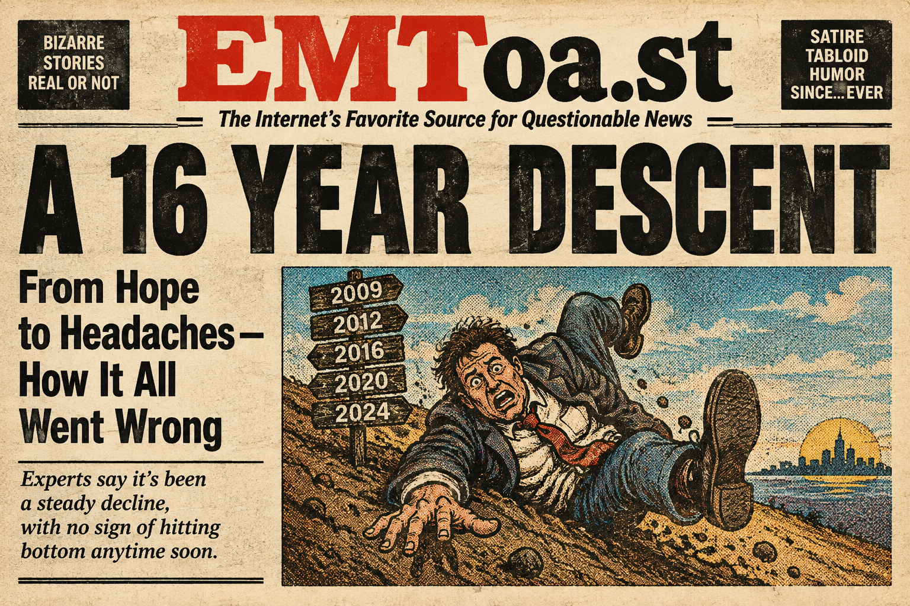

EMToast: A 16+ Year Descent


Another video from these damn robots! It looks like the death of EMToast.com made me (and the robots) take a look back at all the things we wrote since 2008. Analyzing every aspect of it. Absorbing all the factual details that definitely were not made up and would never be believed even though they are clearly listed as fiction. Actually, the weird part is these AI are able to analyze and understand it better than a lot of the humans that used to visit the site. It's kind of scary actually, but fascinating. So I am posting all these. I find them endlessly entertaining. And AI will change and this will become another time capsule year.
Now. I will feed what I wrote into Chatgpt and ask it to regurgitate it back in the style of William Faulkner. Is this what the school kids are doing these days? It seems to work better than just write my paper.
--
Another video from these damn robots, and perhaps it was inevitable that after the death of EMToast.com there would come a time when I, and the robots, would turn back toward that strange little world we had been making since 2008, and begin the long examination of it, taking it apart piece by piece, every story and every claim and every supposedly factual detail that was, of course, never made up at all, except for the fact that it was fiction, which had been clearly stated and was therefore, one would think, impossible to misunderstand.
And yet the strange thing, stranger even than most of what was written there, is that the robots seem to understand it.
They absorb the whole damned thing. They follow the connections, the recurring absurdities, the jokes buried inside the jokes, the things that were plainly fiction and the things that only looked like fiction because they were so ridiculous, and somehow they seem to grasp what a lot of the humans who visited the site back then never quite did.
Which is fascinating.
And maybe a little frightening.
So I keep making these videos and posting them, because I find them endlessly entertaining, this peculiar conversation between a dead website, the machines that have been trained on the world, and whatever part of me is still looking back at something that began in 2008 and somehow kept going long enough to become a piece of the past.
And the strangest part is that the robots will change too.
Years from now, these videos will be another time capsule, another record of what the machines understood, what they misunderstood, and what they thought they understood about the strange little universe we made.
Which, I suppose, is exactly the sort of thing EMToast would have done anyway.
--
Now I don't think that was anything like Faulkner, but it was probably better than what I wrote. So glad I never tried to become an editor, or a journalist, or a writer, or an artist, or anything at all...
Related posts

In Theaters This Week: The Wrestler: Feel Good Movie of the Year
Check it out people! The Wrestler from Fox Searchlight Pictures opened in theaters this week. Charlize Theron has reprised her…


67 Year Old Cheating Granny Chokes on Meat Bun and Dies
A 67 year old grandmother was having an affair with a 71 year old man. One morning she called him…

Animatronic Santa Charged in Slayings of 267 Children Over 46 Years
1962 - a time of innocence. Americans were obsessed with the future and all the wonders it would bring. It…